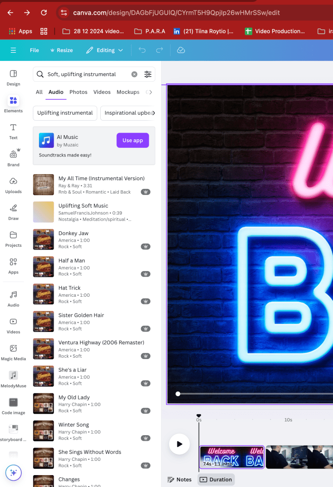
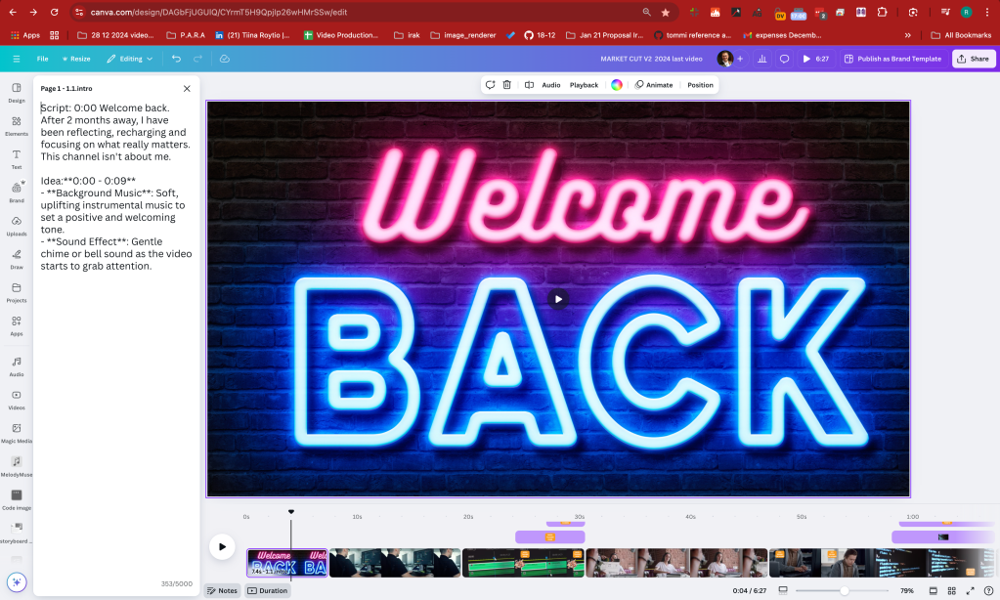
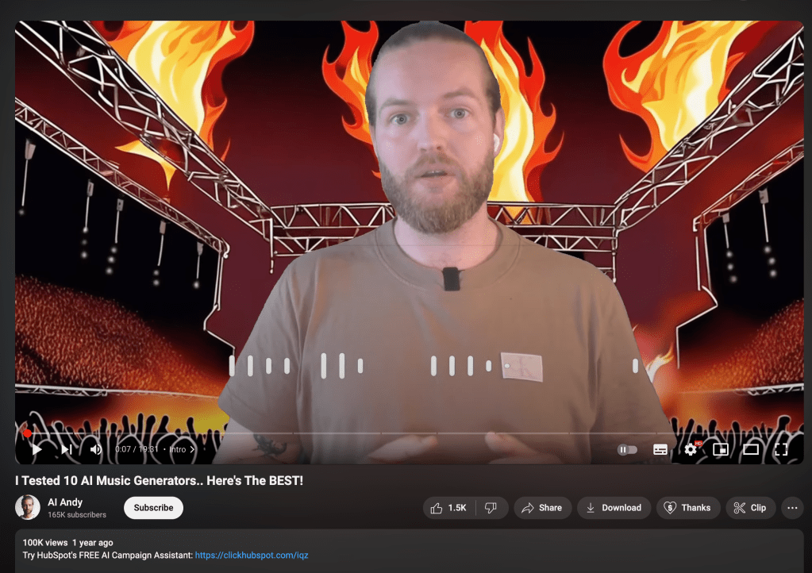
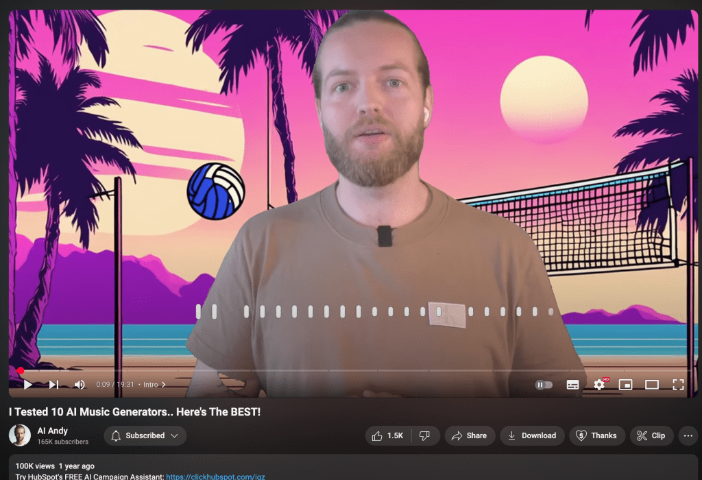
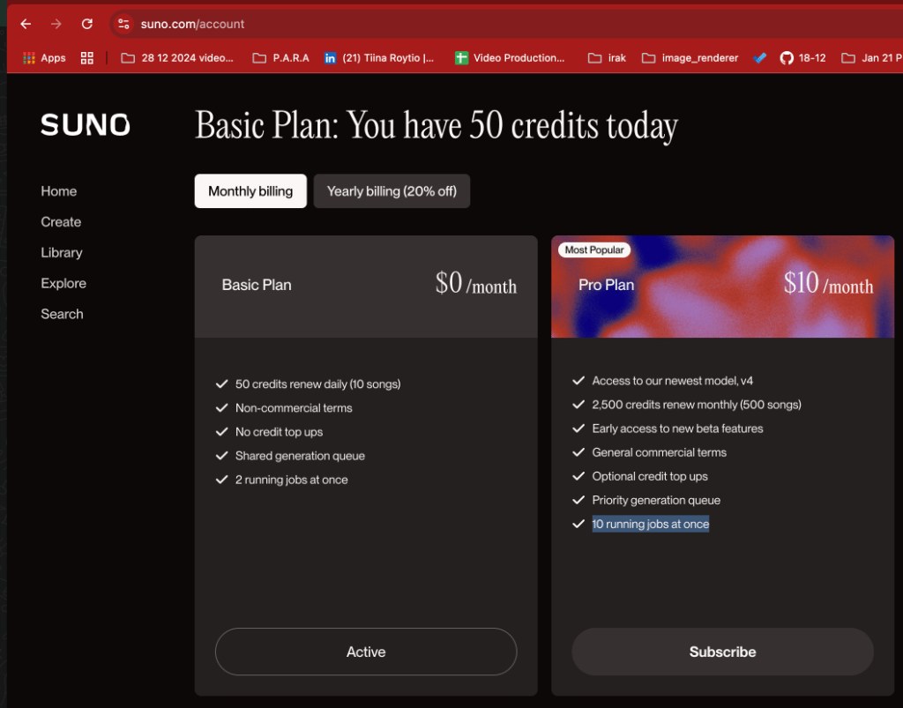

Scoring with GPT
This is a scoring example using Copilot from Office 365
Script
0:00 Welcome back. After 2 months away, I have been reflecting, recharging and focusing on what really matters. This channel isn't about me.
0:09 It's about creating value for you, for the viewer. No fluff, no distractions, just insights, stories and tools to make a difference.
0:18 Let's dive in. In my absence, I realized that I was really doing makeup in the videos in 2024 and I was really focusing on the A-rolls, but not on the V-rolls.
0:30 They call it B-rolls on video production, you create a script, you run through and you do the footages in the background, I realize I was spending way too much time and I was not really showing what I was doing at my real contract.
0:47 But this year I focused on, I will take the B-rolls, the B-rolls in the background for you as the main candidate in here and focus on first principles to make sure that I show the user's journey as much as possible to you so you understand what it goes through in an IT person's life even in a recession
1:09 I said this is the good thing to do because once the market picks up you need all these skills that I'm sharing to you right now.
1:17 What I've been doing I'm letting go of my old business model I did have the chance to go over this with different partners I realized coming back to reality is very important.
1:29 I did talk to a friend who was not really in this world, but he had all these ideas. He was a very quick start at the realities we all have these constraints and I realized in my last studio I was spending around two thousand pounds a month with all the expenses coming in.
1:49 I was unable to create one course a year and that was not enough to be able to support the studios.
1:55 Let's play within our constraint. Right now I have to move around, I go to a coffee shop, I work in storage, I work from home but in the long term I'm focusing on something that I am the really user for which is the CVS code which I have shared in the previous video.
2:14 I created this delivery pilot LinkedIn group feel free to come in there. I'm putting assignments for you so you be able to come in and be able to collect feedback from me and you will be able to build your CV at the same time.
2:29 How am I doing with these AI tools? I'm benefiting a lot. I'm creating two to three git repositories in GitHub and for myself, for my self-learning path, it is the best thing after the bread and butter so I realized this is the correct time and the correct place right now because all the AI tools catching
2:52 up. With the Eraser AI, with the Drow IO being able to save into Git, I have all my personal experiences on turning on systems like Grafana, Prometheus, OpenShift.
3:06 I am building my own GitHub and I realized that it's also supporting my CV in the background which can be duplicate it.
3:14 This is not like get rich scheme or become famous. You are going to do projects, you will be able to have something that you can add to your LinkedIn in the background.
3:25 I'm testing these systems with other users at work, where I work as an SRA site reliability engineer in a DevOps environment.
3:33 I'm getting the feedback from them, but at the end I want to make sure I use this YouTube channel, leverage this place and be able to give feedback to you.
3:43 The impact of recession in 2024, that was an important milestone for me. I encouraged myself for skills building. Covid, I learned how to do day trading.
3:55 I don't think that's a good long-term productivity strategy. I realized focusing on sales and making more money is not the way to go.
4:04 For my personal life, I let go all the egos as much as I can. I understood there's all these personal agendas where everybody is lying all the time, your allies, your government.
4:18 It is alright. I will focus on creating value for the others. That is what I can do. That is what's in my looks of control.
4:27 And that is the hill that I wanna die on. I don't wanna die on the hill that I'm just focused on doing the sales.
4:33 but I'm able to build packages, get repositories, add them for the customers. I think that is the way to go for me.
4:41 Even though you are in a recession, the market will change and I will be in a position to be able to capitalize on it.
4:50 And I want you guys to be able to do this as well. I see this like a civilization game where you are exchanging technologies from each other.
4:58 And if you have the network for it, I think that is the best thing that you can have as a community in IT.
5:05 For you to be able to be a member of this community, make sure you go to the LinkedIn assessments that I'm putting the link down below and follow the checklist, right now I didn't set up an MVP for it, so you have to follow up the checklist, make sure that you are creating repositories like myself, put
5:22 the folders in, start doing the rubber ducking process for yourself. I will give you the notifications because in early stages there are not that many people I will be able to give you the feedback.
5:34 I'm the original user so I will tell you what I'm doing for what makes me become successful turning on these systems and I'm recording and documenting everything I learn in these processes such as last week I was able to use the draw IA saving it to a git, saving it to the GitHub project that I have,
5:57 which is leveraging my CV more and more, because these are reusable, you can do the same on your end, so focus on building up your profile, leverage the community, create your own projects, which are open source, and make sure the future looks bright for you, have a positive attitude, and I want to make
6:20 sure that I connect with you on LinkedIn and if you can add this channel and support it, I will really appreciate it.
Prompt
Give me the ideas for sound effect and background music with timecodes > []
Output
`Here are some ideas for sound effects and background music with timecodes for your video:
0:00 - 0:09
- Background Music: Soft, uplifting instrumental music to set a positive and welcoming tone.
- Sound Effect: Gentle chime or bell sound as the video starts to grab attention.
0:09 - 0:18
- Background Music: Continue with the soft, uplifting instrumental music.
- Sound Effect: Subtle whoosh sound effect when transitioning to the next segment.
0:18 - 0:30
- Background Music: Light, motivational music to keep the energy up.
- Sound Effect: None needed, let the music carry the segment.
0:30 - 0:47
- Background Music: Maintain the light, motivational music.
- Sound Effect: Soft typing or clicking sounds in the background to emphasize the focus on video production.
0:47 - 1:09
- Background Music: Transition to a slightly more intense, focused instrumental track to highlight the importance of the message.
- Sound Effect: None needed, let the music emphasize the message.
1:09 - 1:17
- Background Music: Continue with the focused instrumental track.
- Sound Effect: Subtle whoosh sound effect when transitioning to the next segment.
1:17 - 1:29
- Background Music: Return to the light, motivational music.
- Sound Effect: None needed, let the music carry the segment.
1:29 - 1:49
- Background Music: Maintain the light, motivational music.
- Sound Effect: Soft ambient sounds like a coffee shop or office to emphasize the change in work environment.
1:49 - 2:14
- Background Music: Transition to a calm, reflective instrumental track to match the introspective tone.
- Sound Effect: None needed, let the music emphasize the message.
2:14 - 2:29
- Background Music: Return to the light, motivational music.
- Sound Effect: Subtle whoosh sound effect when transitioning to the next segment.
2:29 - 2:52
- Background Music: Maintain the light, motivational music.
- Sound Effect: Soft typing or clicking sounds in the background to emphasize the focus on AI tools.
2:52 - 3:06
- Background Music: Continue with the light, motivational music.
- Sound Effect: None needed, let the music carry the segment.
3:06 - 3:14
- Background Music: Transition to a slightly more intense, focused instrumental track to highlight the importance of the message.
- Sound Effect: None needed, let the music emphasize the message.
3:14 - 3:25
- Background Music: Return to the light, motivational music.
- Sound Effect: None needed, let the music carry the segment.
3:25 - 3:33
- Background Music: Maintain the light, motivational music.
- Sound Effect: Soft ambient sounds like an office to emphasize the work environment.
3:33 - 3:43
- Background Music: Transition to a calm, reflective instrumental track to match the introspective tone.
- Sound Effect: None needed, let the music emphasize the message.
3:43 - 3:55
- Background Music: Return to the light, motivational music.
- Sound Effect: None needed, let the music carry the segment.
3:55 - 4:04
- Background Music: Maintain the light, motivational music.
- Sound Effect: Subtle whoosh sound effect when transitioning to the next segment.
4:04 - 4:18
- Background Music: Transition to a calm, reflective instrumental track to match the introspective tone.
- Sound Effect: None needed, let the music emphasize the message.
4:18 - 4:27
- Background Music: Return to the light, motivational music.
- Sound Effect: None needed, let the music carry the segment.
4:27 - 4:33
- Background Music: Maintain the light, motivational music.
- Sound Effect: Subtle whoosh sound effect when transitioning to the next segment.
4:33 - 4:41
- Background Music: Continue with the light, motivational music.
- Sound Effect: None needed, let the music carry the segment.
4:41 - 4:50
- Background Music: Transition to a slightly more intense, focused instrumental track to highlight the importance of the message.
- Sound Effect: None needed, let the music emphasize the message.
4:50 - 4:58
- Background Music: Return to the light, motivational music.
- Sound Effect: None needed, let the music carry the segment.
4:58 - 5:05
- Background Music: Maintain the light, motivational music.
- Sound Effect: Subtle whoosh sound effect when transitioning to the next segment.
5:05 - 5:22
- Background Music: Continue with the light, motivational music.
- Sound Effect: None needed, let the music carry the segment.
5:22 - 5:34
- Background Music: Transition to a calm, reflective instrumental track to match the introspective tone.
- Sound Effect: None needed, let the music emphasize the message.
5:34 - 5:57
- Background Music: Return to the light, motivational music.
- Sound Effect: None needed, let the music carry the segment.
5:57 - 6:20
- Background Music: Maintain the light, motivational music.
- Sound Effect: Subtle whoosh sound effect when transitioning to the next segment.
6:20 - End
- Background Music: Continue with the light, motivational music.
- Sound Effect: None needed, let the music carry the segment.
Feel free to adjust the music and sound effects based on the specific tone and pacing of your video. Good luck with your project!`
**My Search in Canva **

Implementation
Script: 0:00 Welcome back. After 2 months away, I have been reflecting, recharging and focusing on what really matters. This channel isn't about me.
Idea:0:00 - 0:09
- Background Music: Soft, uplifting instrumental music to set a positive and welcoming tone.
- Sound Effect: Gentle chime or bell sound as the video starts to grab attention.
Use the notes section

**My Pick : **
https://easymusic.ai/en/music/21130-62e34cf4-a450-f0d0-9170-34f860bbab32/embed
AI music generator to help and collect feedback ^
Music and the visuals sync


Suno has key features

-
easy link share
-
easy instrumental create
-
easy video create for whatsapp share
Sanaa pairing
uses recommended music ! / tiktok less search
long form format asking too many questions could be costly.
Reference>
https://www.canva.com/design/DAGbFjUGUlQ/CYrmT5H9QpjIp26wHMrSSw/edit
Imported from rifaterdemsahin.com · 2025